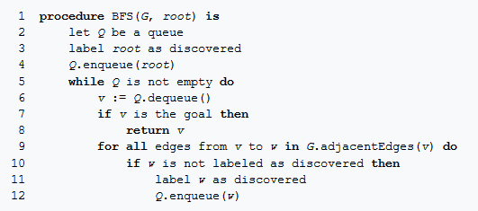
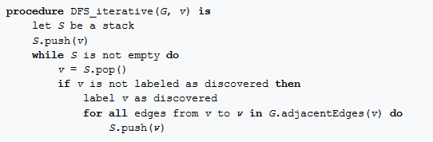

A graph is a data structure that contains nodes of data called 'vertices' that are connected to each other via edges.
The vertices represent data values and can be anything from numbers to letters or addresses or complex data like a social media profile.
The edges represent connections between these values and can be anything from words to kilometres or something more abstract like a friendship connection.
Edges can be either directed or un-directed. This defines how the relaionship between the two vertices work. An example of this is a one-way street between two vertices (destinations).
In computer science graphs are used to represent networks of data, organization of computational devices, as well as visualize and represent complex problems that computers and
programmers need to solve. Such as the fastest route to a desintation when you open Google Maps. Or how to recommended products for advetisement or friends to suggesting adding because of
their relation to yourself and your friends. Graphs are an indespensible tool for programmers and without them we would be in a very different world.
Graph Traversal refers to the process of moving along a graph from vertex to vertex via the edges that connect them. Graph Traversal algorithms are algorithms that
move along the graph either looking for a value (Searching Algorithm) or computing a value or relationship (normal traversal).
Python is a beginner friendly langauge with a dynamic object system, as such constructing and traversing graphs is not a difficult task for an experience Python developr.
However, seeing as this course is at a beginner level we will not focus on generating this traversal code ourselves. You can however read more on graph implementations in Python
and try it out yourself here.
Breadth-First Search is a common graph and tree traversal algorithm. It works by exploring each neighbour of a vertex before moving onto the
neighbours of another vertex. If this doesn't make sense right now, no worries it is illustrated below in the Blockly workspace!
The pseudo-code for this algorithm is as so:
 Source: Wikipedia
Depth-First Search is also a common graph and tree traversal algorithm. It works by exploring each a neighbour of a vertex until it runs out of neighbours to visit. It then
backtracks to a vertex with a neighbour it hasn't visited and follows the same pattern as before.
The pseudo-code for this algorithm is as so:
 Source: Wikipedia
For this activity an implementation of Breadth-First Search is given in the Blockly Workspace. Click "Run" to see it traverse the graph!
Your task is to implement the Depth-First Search using the Blockly Workspace and generate the correct Python code. Once you have done that please screenshot the
blocky code and generated Python and send that to your educator for grading.
BONUS: Use the generated Python code and a library like Graphviz to create your own graph traversal!